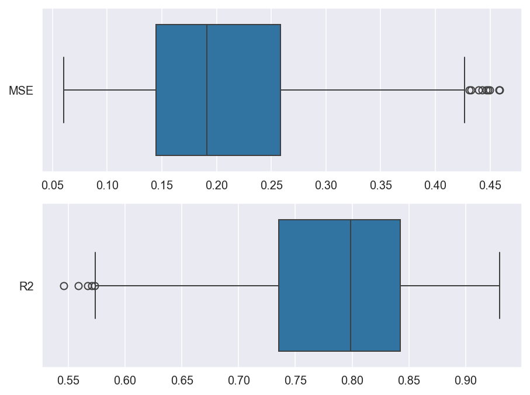
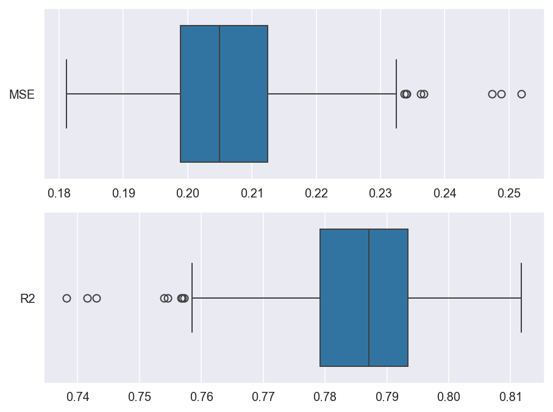

Comparison with scikit-learn#
Compare the prediction scores of a random forest when the data are split randomly (scikit-learn) and with the Kennard–Stone algorithm, for train_test_split and for cross-validation.
Setup#
import modules#
from array import array
from types import MappingProxyType
from sklearn.ensemble import RandomForestRegressor
from sklearn.base import clone
from sklearn.datasets import fetch_california_housing
from sklearn import model_selection as ms
from sklearn.metrics import mean_squared_error as mse
from sklearn.metrics import r2_score
import kennard_stone as ks
import numpy as np
import pandas as pd
import matplotlib.pyplot as plt
import matplotlib.axes
from tqdm.auto import trange
import seaborn as sns
Constants & Variables#
Set random_state for reproducibility.
SEED = 334
rng = np.random.RandomState(SEED)
rf = RandomForestRegressor(n_estimators=100, random_state=rng)
Sample data#
The dataset of California house prices is too large and takes a long time to run, so we extracted as much data as that of Boston.
n_data = 506 # same as boston
X: pd.DataFrame
y: pd.Series
X, y = fetch_california_housing(as_frame=True, return_X_y=True)
X = X.iloc[:n_data]
y = y.iloc[:n_data]
display(X.head(), y.to_frame().head())
| MedInc | HouseAge | AveRooms | AveBedrms | Population | AveOccup | Latitude | Longitude | |
|---|---|---|---|---|---|---|---|---|
| 0 | 8.3252 | 41.0 | 6.984127 | 1.023810 | 322.0 | 2.555556 | 37.88 | -122.23 |
| 1 | 8.3014 | 21.0 | 6.238137 | 0.971880 | 2401.0 | 2.109842 | 37.86 | -122.22 |
| 2 | 7.2574 | 52.0 | 8.288136 | 1.073446 | 496.0 | 2.802260 | 37.85 | -122.24 |
| 3 | 5.6431 | 52.0 | 5.817352 | 1.073059 | 558.0 | 2.547945 | 37.85 | -122.25 |
| 4 | 3.8462 | 52.0 | 6.281853 | 1.081081 | 565.0 | 2.181467 | 37.85 | -122.25 |
| MedHouseVal | |
|---|---|
| 0 | 4.526 |
| 1 | 3.585 |
| 2 | 3.521 |
| 3 | 3.413 |
| 4 | 3.422 |
train_test_split#
scikit-learn#
The randomness is so strong that I tried it 1000 times.
N_ITER = 1000
scores = MappingProxyType(
{
"MSE": array("f"),
"R2": array("f"),
}
)
for _ in trange(N_ITER):
X_train, X_test, y_train, y_test = ms.train_test_split(
X, y, test_size=0.2, random_state=rng
)
rf.fit(X_train, y_train)
y_pred_on_test = rf.predict(X_test)
scores["MSE"].append(mse(y_test, y_pred_on_test))
scores["R2"].append(r2_score(y_test, y_pred_on_test))
sns.set_style("darkgrid")
fig, axes = plt.subplots(
ncols=1, nrows=len(scores), facecolor="w", figsize=(6.4, 4.8), dpi=144
)
for idx_score, score_name in enumerate(scores):
ax: matplotlib.axes.Axes = axes[idx_score]
sns.boxplot(
data=pd.DataFrame(np.asarray(scores[score_name]), columns=[score_name]),
orient="h",
ax=ax,
)
fig.tight_layout()
plt.show()

sns.reset_defaults()
Average#
for score_name, v in scores.items():
print("{0}: {1:.3f}".format(score_name, np.average(v).item()))
MSE: 0.206
R2: 0.786
Kennard Stone#
X_train, X_test, y_train, y_test = ks.train_test_split(X, y, test_size=0.2)
2026-11-07 18:43:15,347 - kennard_stone.utils._pairwise:115[INFO] - Calculating pairwise distances using scikit-learn.
2026-11-07 18:43:15,353 - kennard_stone.utils._pairwise:115[INFO] - Calculating pairwise distances using scikit-learn.
rf = clone(rf)
rf.fit(X_train, y_train)
y_pred_on_test = rf.predict(X_test)
print("MSE: {:.3f}".format(mse(y_test, y_pred_on_test)))
print("R2: {:.3f}".format(r2_score(y_test, y_pred_on_test)))
MSE: 0.068
R2: 0.909
cross_val_score#
N_SPLITS = 5
rf = clone(rf)
scikit-learn#
scores = MappingProxyType({"MSE": array("f"), "R2": array("f")})
for i in trange(N_ITER):
kf = ms.KFold(n_splits=N_SPLITS, random_state=rng, shuffle=True)
y_oof = ms.cross_val_predict(rf, X, y, cv=kf, n_jobs=-1)
scores["MSE"].append(mse(y, y_oof))
scores["R2"].append(r2_score(y, y_oof))
sns.set_style("darkgrid")
fig, axes = plt.subplots(
ncols=1, nrows=len(scores), facecolor="white", figsize=(6.4, 4.8), dpi=144
)
for idx_score, score_name in enumerate(scores):
ax: matplotlib.axes.Axes = axes[idx_score]
sns.boxplot(
data=pd.DataFrame(np.asarray(scores[score_name]), columns=[score_name]),
orient="h",
ax=ax,
)
fig.tight_layout()
plt.show()

sns.reset_defaults()
for score_name, v in scores.items():
print("{0}: {1:.3f}".format(score_name, np.average(v).item()))
MSE: 0.206
R2: 0.786
Kennard Stone#
kf = ks.KFold(n_splits=N_SPLITS)
y_oof = ms.cross_val_predict(rf, X, y, cv=kf, n_jobs=-1)
print("MSE: {:.3f}".format(mse(y, y_oof)))
print("R2: {:.3f}".format(r2_score(y, y_oof)))
2026-11-07 18:47:44,675 - kennard_stone.utils._pairwise:115[INFO] - Calculating pairwise distances using scikit-learn.
2026-11-07 18:47:44,677 - kennard_stone.utils._pairwise:115[INFO] - Calculating pairwise distances using scikit-learn.
MSE: 0.194
R2: 0.799